Kiho, Mie: things to do, food and stays
Kiho · Mie
Kiho
Highlighted on the Mie map.

Stay
ビジネスホテルＡｌｉｎｅサンライト

Business Hotel Aline Sanraito
Hotel in Udono, Kiho with Wi-Fi and business travelers.
Dining
道の駅 紀宝町 ウミガメ公園

Michi No Eki Kiho Machi Umigame Koen
紀宝町ウミガメ公園お食事＆喫茶コーナー
Kiho Machi Umigame Koen O Shokuji & Kissa Kona
杉乃樹
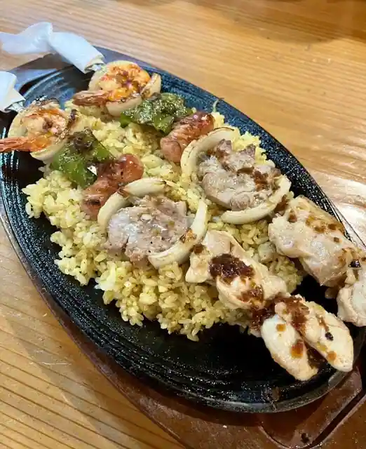
Sugi No Ki
三陽
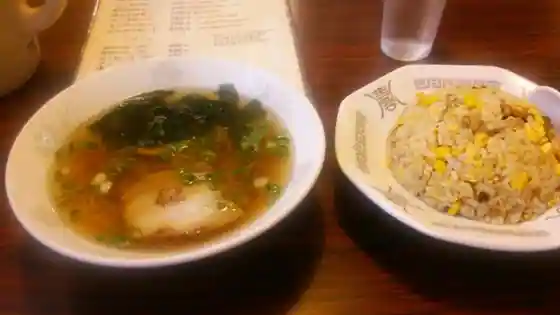
Sanyo
すずめ庵
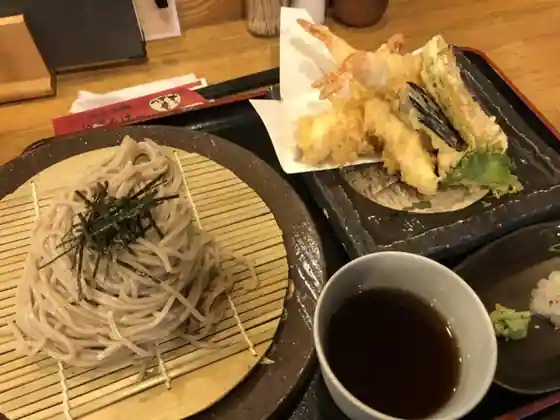
Suzume Iori
王家
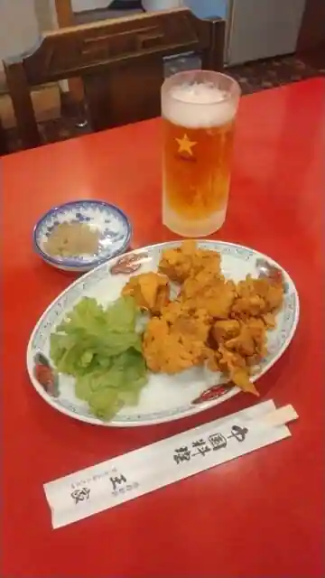
Oke
豚紀伊
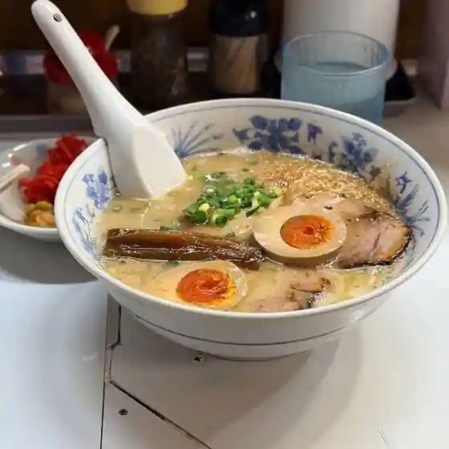
Buta Ki
ぷちーる
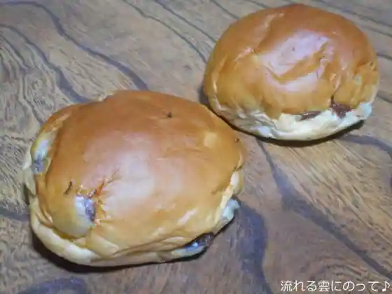
Puchiru
ひふみ
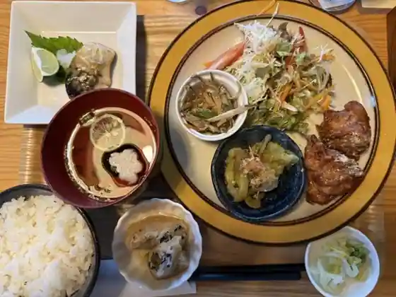
Hifumi
キッチンちあき
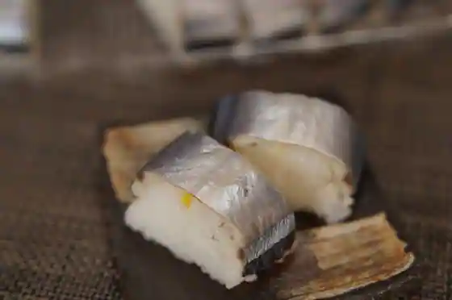
Kitchen Chiaki
ユー
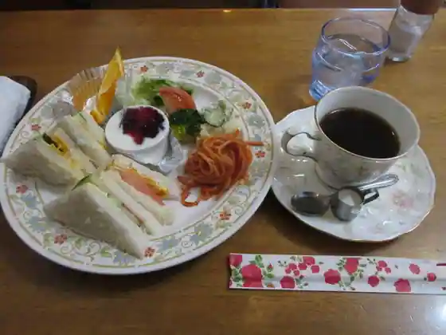
Yu
みゅーる
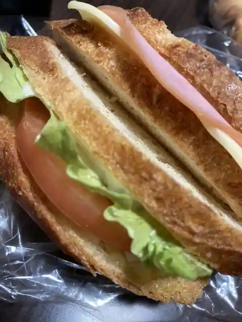
Myuru
ガーデンブレッド
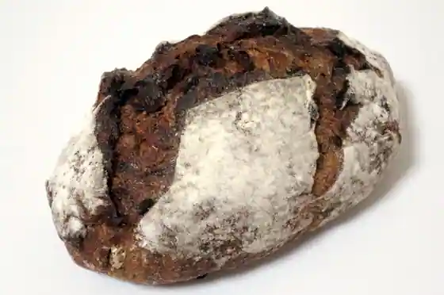
Garden Bureddo
いなせ
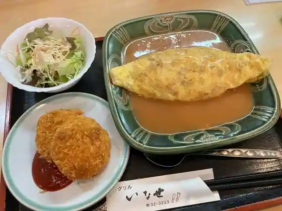
Inase
ココロ食堂
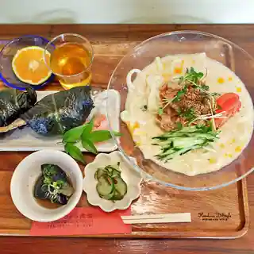
Kokoro Shokudo
たこ焼き まんまる
Tako Yaki Manmaru
紀南居酒屋 しん
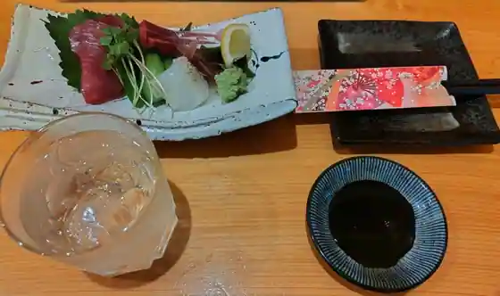
Kinan Izakaya Shin
お好み焼き屋ま～ぶぅ～
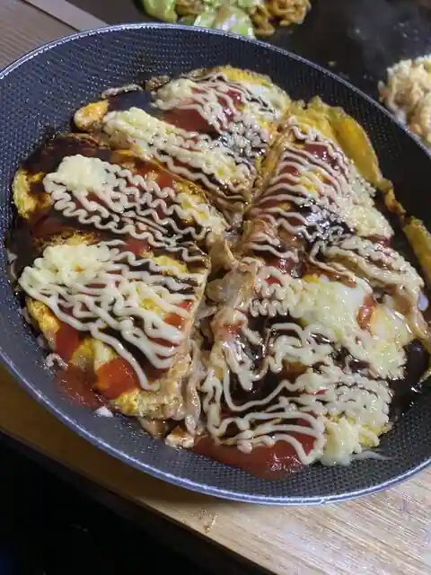
O Konomi Yaki Ya Ma ~ Bu ~
おもちかえりカフェ はしばみ
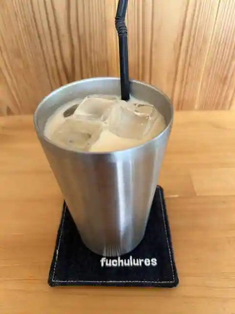
Omochikaeri Cafe Hashibami
焼肉うみ
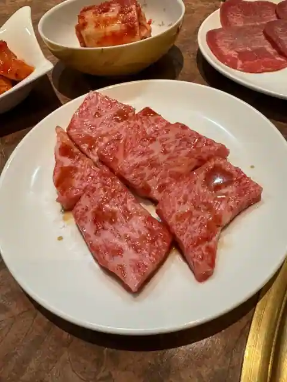
Yakiniku Umi
どさん娘 鵜殿店
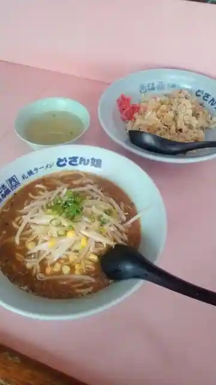
Dosan Musume Udono
パティスリー アフレイル
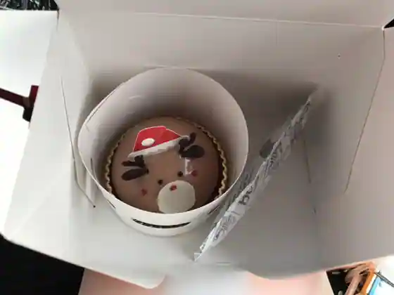
Pateisuri Afureiru
うえの
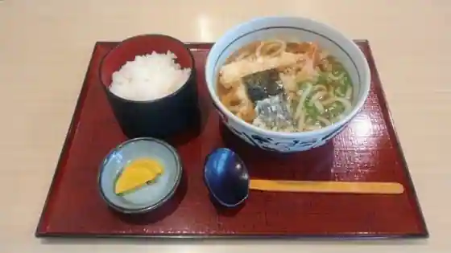
Ueno
だるま堂
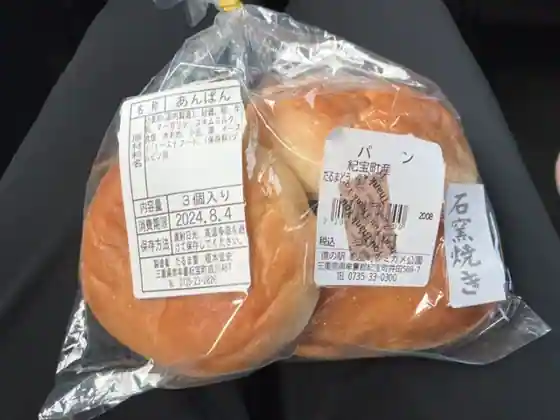
Daruma Do
Sights
Roadside Station (Kiho Umigame Park)

Kumanogawa Taikan Juku

Osato Shinsui Park Nature Puru

Kiho Hotaru no Rambu

Hisetsu Falls Campground
Kumanogawa (Kumano Kodo Ise Michi)
Mifune Shima
Kuma no Kawa Asobi Bu
Ko no Haku Sancho Ni Nobori, Yama to Keikoku Wota no Shimu Haikingukosu
Kami Nai Shrine (Koyasu Shrine)
Hisetsu Falls
Dai Eboshi Yama Misago Iwa
Sen Sato Ni Falls (Promenade)
Hirao I Kusurishi
Takashi Ne Tani Sha
Kiho Furusato Museum (Midori Village)
Kami Uchigami Sha Juso
Ushi no Se
Udono Joshi
Karasu Shi no Shrine
Ida Kannon
Hokyo Into
Kawabata Kaido (Kawa Take Kaido)